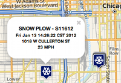

Leaflet Vector Layers
What?
Leaflet Vector Layers allows you to easily add one or more vector layers from a number of different geo web services to a Leaflet map.
Currently there's support for ArcGIS Server, Arc2Earth, GeoIQ, CartoDB and GIS Cloud with more planned.
Check the demos to see the library in action.
How?
Leaflet Vector Layers works by listening to map events (pan and zoom) and then fetching features within the map bounds after each event. This method works great for data sets with lots of features that you want to interact with, but not load all at once.
Sound Chatty? Only have a handful of features? You can also load all of the data once, without listening to map pan and zoom events.
Help
This is an open source project so enhancements and patches are encouraged.
So grab the code, report bugs and let me know what you think.
There's also a Leaflet Vector Layers group if you're interested in joining.
Features
Multi-provider Support
Leaflet Vector Layers makes it easy to dynamically pull vector features from a number of different geo web service providers including ArcGIS Server, Arc2Earth, CartoDB and Geocommons.
If you're interested in, or know of any other providers for this library please let me know.
Easy Popup Templating
The simplest way to describe features in a Leaflet map is by using the API's Popup.
Templates can be in the form of a simple string with field names mustache-wrapped ({driver_name}), or a function that returns HTML content for the Popup. The feature's properties are passed to this function so you can do things like analyze data or show charts and graphs.
For details on Popup templating check the documentation.
Dynamic Data Support
Leaflet Vector Layers makes it easy to visualize live data in a Leaflet map. Just mark the layer as dynamic and auto-updating when you create it and set the interval for how often you'd like to check for updated features.
For details on displaying dynamic data check the documentation.
Simple, Powerful Symbology
Creating effective map styling and symbology is key to getting your message accross to your users.
With Leaflet Vector Layers you can style your layers with a single symbology, a unique symbol for specific attribute values or set symbols to display if a feature's attributes are within a specific range.
For details on symbology options check the documentation.
Scale Dependent Rendering
You likely wouldn't want to show lots of features with complex geometies at lower zoom levels. Using the scaleRange option allows you to set the minimum and maximum zoom levels at which a layer is visible.